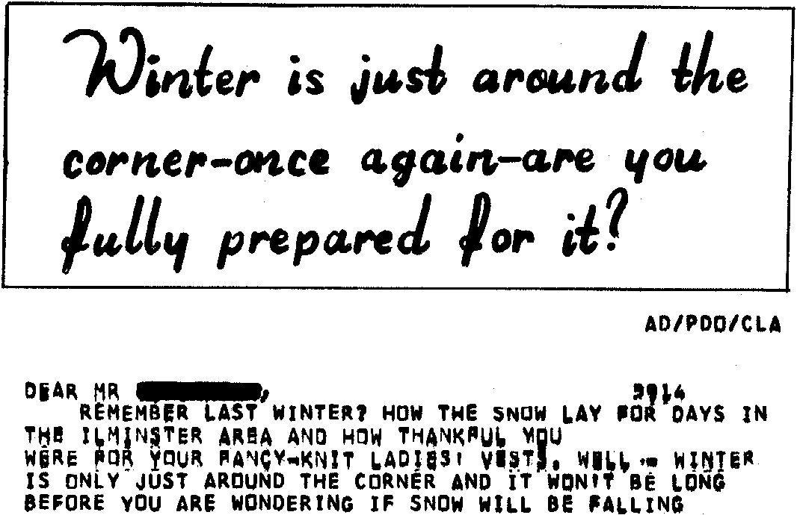

INMC 80 News |
September 1980 – January 1981 · Issue 2 |
| Page 20 of 59 |
|---|
It must be possible to make a colour graphics board that will display more than two colours at a time in a single character space. And is there any reason why the user shouldn’t have control over the brightness of each pixel ? Ideally the resolution should be as good as that of a colour television, of course. My rough calculations indicate that it will need about 500K of RAM, and digital to analogue converters capable of about 25,000,000 operations per second.
Down to earth a bit for the second idea ! In the July 1980 issue of Personal Computer World, R.M.Yorston described how he added a Z80 and 8K of RAM to his 6800-based system. A board like this, to Nasbus specifications, would really amaze the owners of lesser computers. To the Nascom, the board would appear to be (say) 4K of RAM. Data passed into this RAM area could be processed while the Nascom was doing something else. Several such boards in a system would make possible some really fast processing. I could run my star ship simulator in real time ! Oh, what a givaway…
Whatever happened to:
(i) the Christmas game competition ?
(ii) my entry for (i) ?
(iii) all the maze solving programs I thought you would all have written by
now, surely it’s not too difficult ?
(iv) my list with item (iv) on it ?
Here we see that a certain underwear manufacturer, from whom I will never buy a pair of gloves again, could use a little more care in the programming of their computer....
| Page 20 of 59 |
|---|